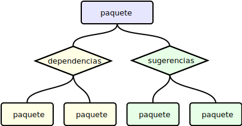

Paquetes más recomendados
UNIX y su uso en Empresas de Comunicaciones Móviles
Ignacio Baca Moreno-Torres
Noviembre 2011
Ignacio Baca Moreno-Torres
Noviembre 2011

Gestor de paquetes es un conjunto de herramientas para
automatizar el proceso de
instalación, actualización, configuración y eliminación
de software.
En estos sistemas el software se distribuye en forma de
paquetes.
Cada paquete contiene una lista de dependencias y una lista de sugerencias

Es una de las muchas herramientas de gestión de paquetes
que se pueden encontrar en linux
Sirve para consultar la base de datos de paquetes
~$ dpkg-query -l zlib1 Desired=Unknown/Install/Remove/Purge/Hold | Status=Not/Inst/Conf-files/Unpacked/halF-conf/Half-inst/trig-aWait/Trig-pend |/ Err?=(none)/Reinst-required (Status,Err: uppercase=bad) ||/ Name Version Description +++-=============================-=============================-========================================================================== un zlib1(no description available)

depends, recomends, all
depends debe devolver una lista de paquetes
seguido del número de paquetes que dependen de él
recomends debe devolver una lista de paquetes
seguido del número de paquetes que lo recomiendan
all debe devolver una lista de paquetes
seguido de la suma de los resultados anteriores
depends
dpkg-query --show -f='${Package}, ${Depends}\n'
Permite obtener una lista de paquetes y sus dependencias
dpkg-query --show -f='${Package}, ${Depends}\n'
acroread-common, debconf (>= 0.5) | debconf-2.0
acl, libacl1 (>= 2.2.51-3), libc6 (>= 2.4)
acpi-support, x11-xserver-utils, acpid (>= 1.0.4-1ubuntu4), hdparm, lsb-base (>= 1.3-9ubuntu3), powermgmt-base, laptop-detect, dmidecode (>= 2.7-1), libc6 (>= 2.4), pm-utils
acroread-common, debconf (>= 0.5) | debconf-2.0 acl, libacl1 (>= 2.2.51-3), libc6 (>= 2.4)
acroread-common,debconf|debconf-2.0 acl,libacl1,libc6
Se debe procesar el resultado obtenido de la consulta dpkg-query
y contabilizar el número de veces que aparece cada paquete
dpkg-query --show -f='${Package}, ${Depends}\n' | awk -F '[,|]+'
# Se filtra para eliminar espacios, comas y versiones
{ gsub(/(([ ]+)|([, ]*$)|(\([^\)]+)))*/,"",$0); }
# Los paquetes sin sugerencias tambien se añaden
{ if (!($1 in totals)) totals[$1]=0 }
# Para cada sugerencia, se suma al total
NF > 1 { for(i=2;i<=NF;i++) totals[$i]++; }
# Al finalizar, se muestran los totales ordenados
END{for(package in totals) print package,totals[package]|"sort";}
recomends
Para calcular los paquetes que lo recomiendan se hace
de forma similar, únicamente cambiando la llamada a dpkg-query
dpkg-query --show -f='${Package}, ${Suggests}\n'
all
Para el calculo de all se acumula en la
variable de totals tanto las dependencias
como las recomendaciones
BEGIN {
cmd = \"$COUNTER -f '$FILTER_LIST' depends 2>/dev/null\";
while (cmd | getline depends) {
split(depends,cols,\" \");
totals[cols[1]]=cols[2];
}
if (depends < 0) exit 1;
}
set -o errexitNo tenemos que comprobar para cada comando si
$? es diferente de 0
shopt -s nocasematchPara facilitar su uso
getopts para
ir obteniendo los parámetros pasados en la llamada
while getopts ":f:m:" option
do
case $option in
f) FILTER_LIST="${OPTARG}";;
m) ALL_METHOD="${OPTARG}";;
\?) echo "dpkg-counter: opción invalida -- '${OPTARG}'"; USAGE;;
esac
done
Permite procesar fácil y de forma segura los argumentos
$1
la acción ha realizar
case $1 in
depends) DEPENDS;;
recomends) RECOMENDS;;
all) ALL;;
*) echo "dpkg-counter: acción invalida -- '$1'"; USAGE;;
esac
Se delega a cada función especifica la ejecución

$ dpkg-counter dpkg-counter: acción invalida -- '' Usage: dpkg-counter [OPTONS]... [ACTION] Actions: depends: Muestra una lista de paquetes y el numero de dependencias recomends: Muestra una lista de paquetes y el numero que lo recomiendan all: Muestra la suma de depends y recomends Options: -f: filtra la busqueda de paquetes con el parametro filtro -m : metodo de calculo de la acción all [ dpkg*, recursive ]
$ dpkg-counter recomends ... xsidplay 1 xsltproc 0 xterm 0 x-terminal-emulator 1 xtrans-dev 0 x-ttcidfont-conf 5 ...
all
$ dpkg-counter -m recursive all >tmp1 && \ dpkg-counter -m dpkg all >tmp2 && \ diff -y tmp1 tmp2 abiword 1 abiword 1 accountsservice 4 accountsservice 4 acl 1 acl 1 acpid 2 acpid 2 acpi-support 0 acpi-support 0 acroread-common 0 acroread-common 0 adduser 37 adduser 37 adium-theme-ubuntu 1 adium-theme-ubuntu 1 aisleriot 1 aisleriot 1 akonadi-backend-mysql 2 akonadi-backend-mysql 2 ...
$ dpkg-counter all | awk '{print $2,$1}' | sort -nr | head
2023 libc6
687 libglib2.0-0
439 libstdc++6
395 python
332 libgcc1
288 libx11-6
262 libgdk-pixbuf2.0-0
243 libcairo2
221 libpango1.0-0
216 zlib1g